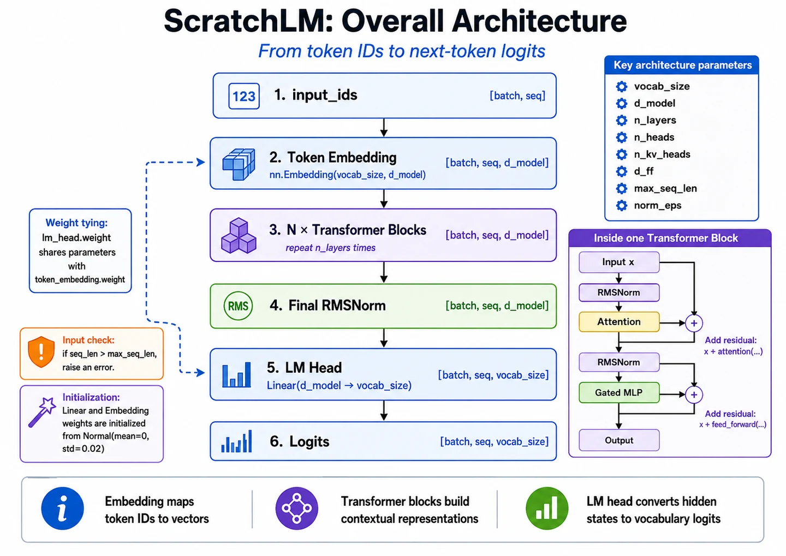
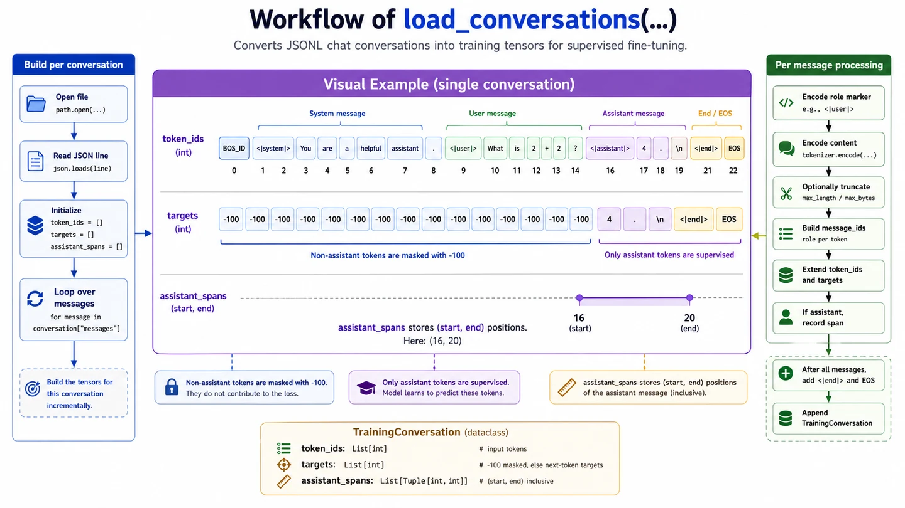
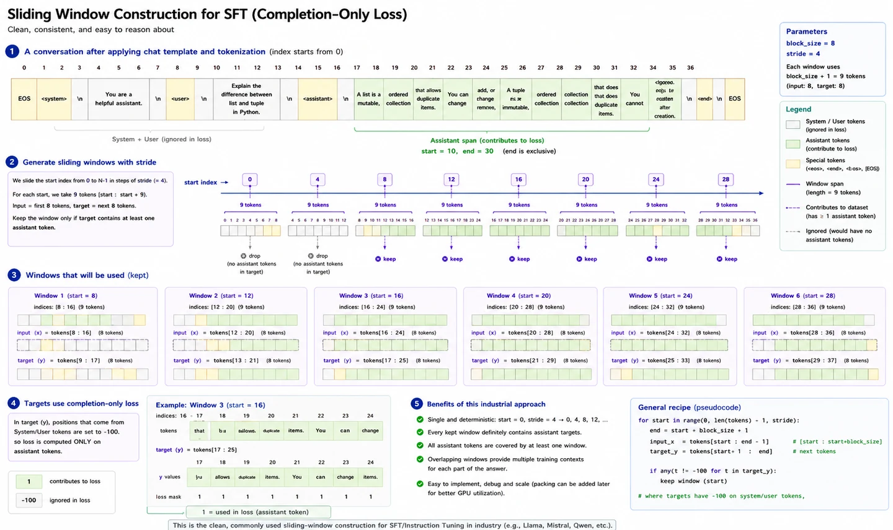

Your win: follow token IDs to logits, separate architecture from training stages, and explain how pretraining, supervised fine-tuning, and generation use the same decoder.
20 minutesNeeds: Lessons 10–13Outcome: enter Module 3 with context
Module bridge: the next nine lessons open the purple “Transformer blocks” stage below and explain every operation inside one block.

The residual stream keeps shape \([B,T,D]\) through the block stack. The language-model head changes the final axis from model width \(D\) to vocabulary size \(V\).
Keep a five-line shape ledger
Stage
Shape
What changes
Token IDs
\([B,T]\)
Discrete vocabulary indices
Token embeddings
\([B,T,D]\)
Add one learned feature vector per token
\(N\) decoder blocks
\([B,T,D]\)
Build contextual representations while preserving the residual shape
Final normalization
\([B,T,D]\)
Rescale each token's features
LM head logits
\([B,T,V]\)
Score every vocabulary token at every position
One architecture supports several training stages
1 · Pretraining
Learn broad language patterns from next-token prediction over large text corpora.
Objective: predict the continuation.
2 · Supervised fine-tuning
Continue next-token training on structured prompt-response demonstrations.
Objective: imitate useful responses.
3 · Preference alignment
Use preference data or rewards to favor responses judged more helpful and safe.
Objective: improve behavioral choices.
The model still produces next-token logits in every stage. What changes is the data, loss construction, or optimization procedure.
Optional implementation view · how chat messages become supervised tensors

Completion-only SFT commonly masks system and user targets, so only assistant response tokens contribute to the loss.Optional implementation view · long conversations become training windows

Overlapping windows fit long conversations into a fixed context length while retaining assistant targets.
Training and generation reuse the forward pass
Training
Forward all positions, compare \([B,T,V]\) logits with shifted targets, backpropagate the loss, update weights.
Generation
Forward the visible context, read final-position logits, sample one ID, append it, repeat without updating weights.
Code checkpoint · the full model in five operations
This is the outer structure implemented by the course's TransformerModel. Module 3 will replace the block placeholder with its complete implementation.
Show the model-level forward pass
def forward(self, token_ids):
x = self.token_embedding(token_ids) # [B, T] -> [B, T, D]
for block in self.layers:
x = block(x) # [B, T, D] -> [B, T, D]
x = self.final_norm(x) # [B, T, D]
logits = self.lm_head(x) # [B, T, D] -> [B, T, V]
return logits
Trace it: Which operation changes the final axis from \(D\) to \(V\)?
Retrieval check
Where do next-token vocabulary logits first appear?
Practice before moving on
Write the shape chain for \(B=2,T=128,D=512,V=32{,}000\).
Which two axes are preserved from token IDs through logits?
Why must every decoder block return width \(D\)?
Compare the data used for pretraining and supervised fine-tuning.
Name the four operations used only during training after the forward pass begins.
Teach the complete path from a prompt string to one sampled continuation token.
Residual additions and the next block expect the shared residual-stream width.
Pretraining uses broad text continuation data; SFT uses curated prompt-response demonstrations, often with loss focused on assistant tokens.
Target comparison, scalar loss, backward/gradient computation, and optimizer update.
Tokenize → embed → decoder blocks → final norm → LM head → final-position logits → filtering/softmax → sample and append.
Ready for Module 3: you now know what enters a block, why it is trained, and where its output goes. Next, keep a shape ledger while opening the block itself.